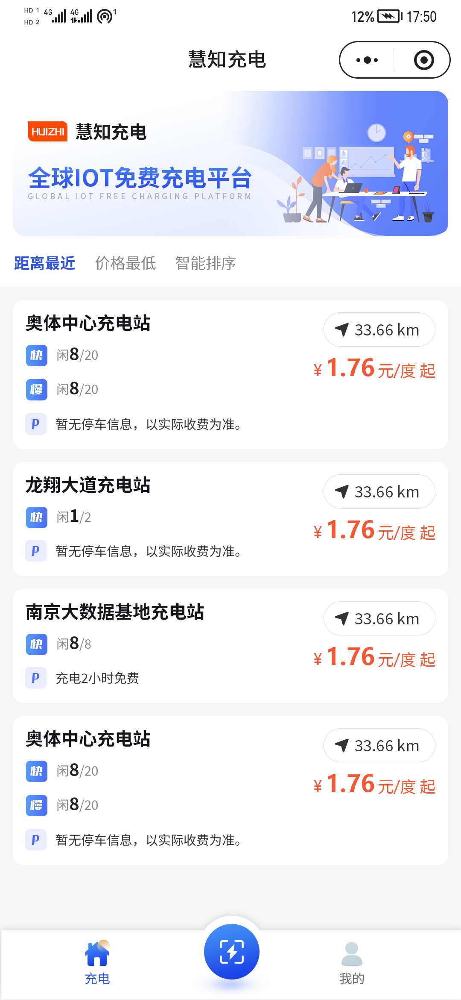
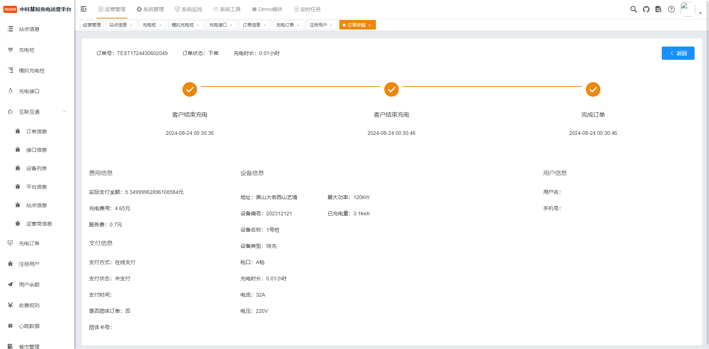
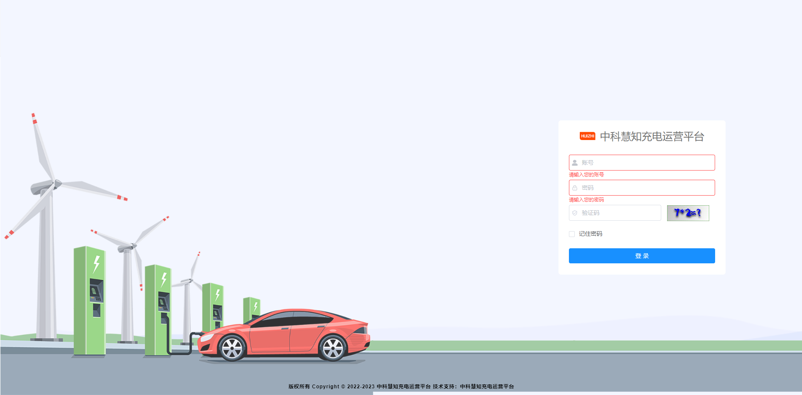
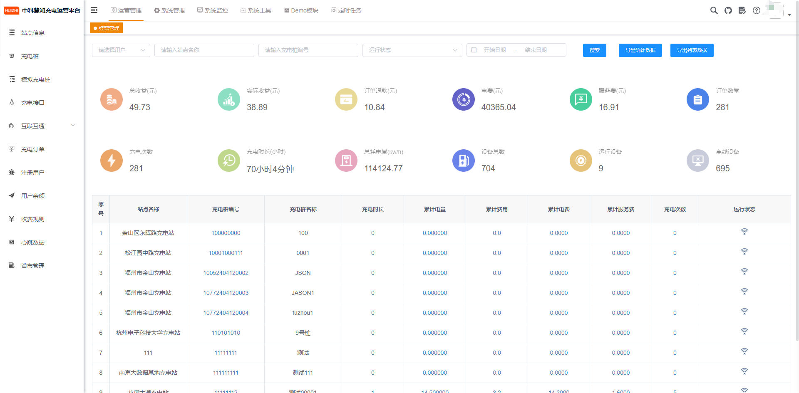

故障工单闭环
报修、分配、处理、解决、用户确认关闭，状态和处理日志可追踪。
面向充电运营的后台、小程序和模拟设备一体化演示项目。用一条可追踪的工单链路，把设备告警、用户报修和运营统计串起来。
报修、分配、处理、解决、用户确认关闭，状态和处理日志可追踪。
余额流水、幂等模拟充值、每日签到、完成订单奖励积分。
无需真实桩即可演示站点选择、充电状态、结束结算和订单查询。




截图来自本地演示资源；部署到 GitHub Pages 后请确认仓库路径和中文文件名链接可正常访问。
JavaSpring BootSpring CloudMySQLRedisVue 2Vue 3uni-appDocker